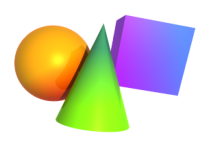
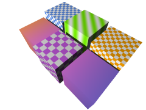

XSight RT provides the following shape classes:
|  |
Most shape parameters controls geometrical properties in the shape. With a few exceptions, however, all they need a material parameter to control the visual appearance for the object. A material must specify a color, or a color pattern, the reflection coefficient, an optional roughness for diffuse reflections, the Phong effect amount and size, etc.
These are the materials supported by the current XSight RT version:
|  |
Home | Small Instantiation Language overview | Scenes | Solids | CSG operations | Surfaces | Transforms | Materials